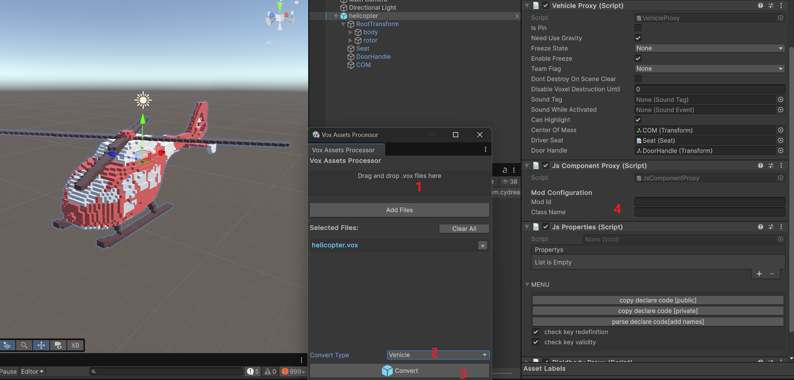

This tutorial introduces the current Helicopter sample in Assets/Samples/com.cydream.helicopter. The sample uses the normal vehicle prefab pipeline plus a TypeScript logic layer for helicopter-specific flight behavior.
Import your helicopter .vox file with Vox Assets Processor and set Convert Type to Vehicle before converting.
The sample is organized as separate voxel parts for the helicopter body and rotor, then assembled into a single prefab setup after import.

After import, use the generated prefab as the base and set up the same core structure used by the sample:
Vehicle Proxy on the root object.Rigidbody Proxy on the root object.JsComponentProxy on the root object.Seat child transform and seat component for the driver.DoorHandle child transform linked to the seat.COM child transform assigned as the vehicle center of mass.RootTransform child that holds the imported voxel parts.In the sample prefab, Vehicle Proxy references:
Driver Seat -> SeatDoor Handle -> DoorHandleCenter Of Mass -> COMVehicle Proxy is required. It is the component the game uses to inject vehicle logic, receive control input, and connect the prefab to the built-in vehicle systems. Without it, the TypeScript layer cannot hook into the helicopter as a working vehicle.
Add JsComponentProxy on the same root object and set:
Mod Id to your mod idClass Name to HelicopterThe sample also keeps the imported vehicle parts under RootTransform, with a body voxel object and a rotor voxel object.
Besides the required seat, handle, and center of mass references, you can add custom config values for helicopter logic.
The sample script looks for a rotateCenter reference in component pair data and uses it as the rotor visual pivot. If that custom reference is not provided, it falls back to RootTransform/rotor.
That means the common setup pattern is:
Seat, DoorHandle, and COM configured on Vehicle Proxy.RootTransform.JsProperties when you want a more customized vehicle setup.The vehicle gameplay logic is implemented in Assets/Samples/com.cydream.helicopter/Scripts/helicopter.ts and exported by Scripts/index.ts.
This script is a good reference for common vehicle logic patterns:
Vehicle Proxy from JsComponentProxy.ModAPI.onFixedUpdate to simulate lift, pitch, roll, yaw, damping, and hover hold.onUpdate.onDestroy.Representative setup:
export class Helicopter {
private readonly bindTo: VX.Mod.JsComponentProxy;
constructor(bindTo: VX.Mod.JsComponentProxy) {
this.bindTo = bindTo;
this.bindTo.onStart = () => this.onStart();
this.bindTo.onUpdate = (dt) => this.onUpdate(dt);
this.bindTo.onFixedUpdate = (dt) => this.onFixedUpdate(dt);
this.bindTo.onDestroy = () => this.onDestroy();
}
}
The key pattern is that the built-in vehicle component stack stays on the prefab, while TypeScript layers the helicopter flight behavior on top by subscribing to the Vehicle Proxy callbacks and driving the rigidbody through ModAPI.
After the prefab is working, add it to manifest.asset.
In the sample:
id is com.cydream.helicopterPrefab/helicopter.prefabThen export the mod and test these points in game:
DoorHandleSeatCOMJsComponentProxy is calling the Helicopter TypeScript logic correctly